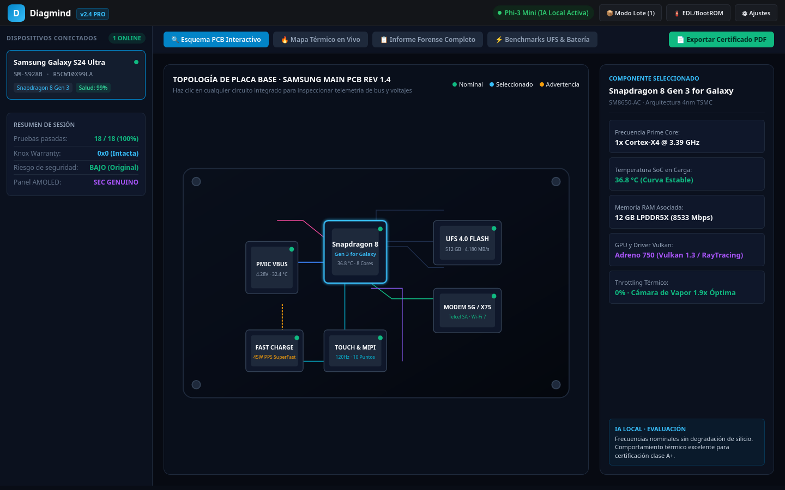
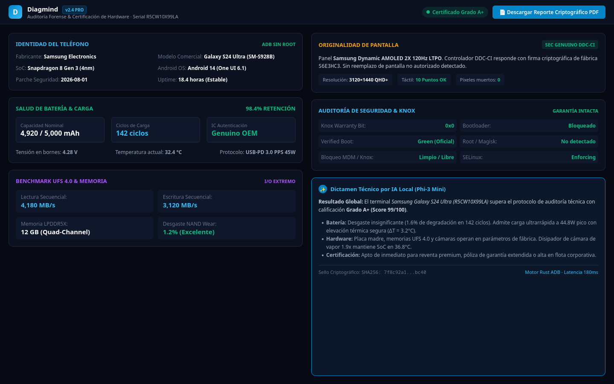

Auditoría profunda de hardware y software vía ADB sin root: batería, pantalla, sensores, CPU y almacenamiento, 100% local y asistido por IA.
Optimizado para talleres de reparación, centros de servicio técnico y empresas de reacondicionamiento móvil.
Inspección completa por cable USB sin anular garantías ni requerir permisos de superusuario. Detección automática instantánea al enchufar el teléfono.
Lectura real de ciclos de carga, salud porcentual, temperatura de operación, voltaje instantáneo y tasa de degradación química de la celda.
Identificación precisa de SoC, núcleos activos, estado de la memoria RAM (libre/swap) y salud de la memoria interna NAND (sectores y velocidad).
Pruebas interactivas de digitalizador táctil, detección de zonas muertas, verificación de colores RGB y matriz de sensores de proximidad y luz.
La app complementaria "Diagmind Probe" se despliega por USB para telemetría profunda en tiempo real y pruebas activas de periféricos sin configuración manual.
Correlación de logs del sistema (logcat) y métricas de hardware mediante IA que se ejecuta 100% en la computadora del técnico, sin enviar datos a internet.
Capturas reales de Diagmind: inspección de silicio a nivel de placa madre, telemetría de bus de datos y certificación por IA local.

Mapeo esquemático interactivo de pistas de cobre y circuitos integrados. Monitorea temperaturas de silicio, voltajes VBAT y detección de throttling térmico sin desarmar el teléfono.

Auditoría con validación de ciclos de batería, velocidad secuencial UFS 4.0 (4,180 MB/s), firma criptográfica de pantalla original AMOLED DDC-CI y dictamen emitido por IA local (Phi-3).
Diagmind está desarrollado con Rust + Tauri 2.0, React 19 y SQLite. Esta arquitectura garantiza tiempos de respuesta instantáneos y un consumo mínimo de memoria RAM en la computadora anfitriona.
Toda la información de diagnóstico permanece en tu equipo de trabajo: sin cuentas obligatorias en la nube ni fuga de datos confidenciales de tus clientes.
Disponible para los dos sistemas operativos dominantes en estaciones técnicas.
Instalador gráfico (.exe NSIS) con configuración automática de reglas de Firewall y controladores de dispositivo ADB listos para usar.
Integración nativa con reglas udev y permisos en grupo plugdev para acceder a teléfonos por USB sin necesidad de permisos sudo.
Escoge la modalidad que mejor impulse la productividad de tu taller.
Para técnicos de reparación freelance y especialistas independientes.
1 estación de trabajo
Para talleres comerciales con múltiples bancos de trabajo.
Hasta 5 estaciones simultáneas
Para empresas de recertificación y volumen masivo.
Estaciones ilimitadas e integración ERP
Prueba Diagmind en tus bancos de trabajo y eleva la confianza de tus clientes con reportes certificados.
Contáctanos para habilitar una licencia de prueba en tu taller: